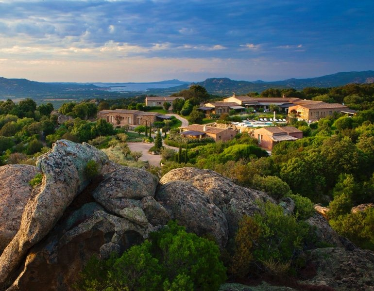
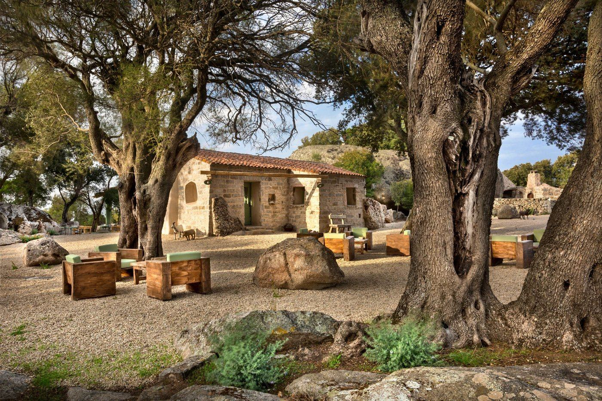
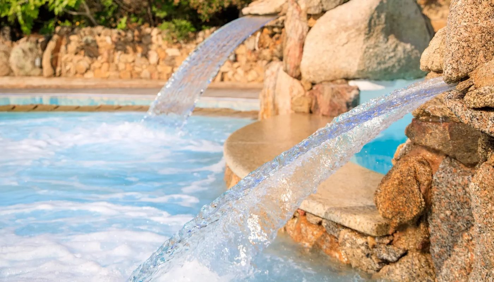
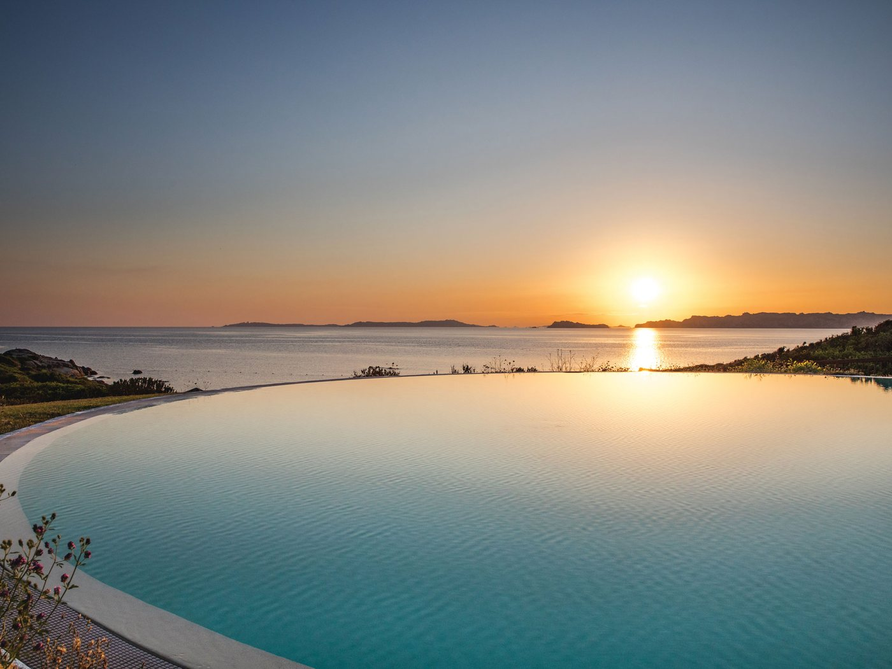
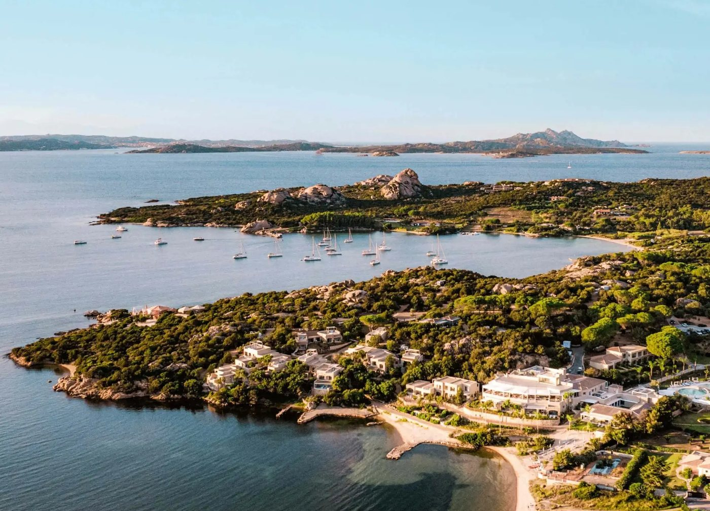
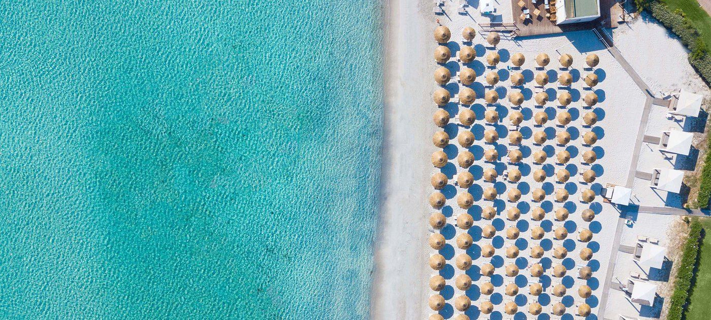

Les meilleurs hôtels 5 étoiles en Sardaigne
Un phare de 1856 encore en service à la pointe sud de l'île, un stazzo de sept clés dans les collines de la Gallura, un village de 28 hectares le long de la côte du nord. Sept maisons, deux indices propriétaires, et le défaut de chacune.

Le Faro Capo Spartivento, à Domus de Maria : un phare de la marine italienne toujours en service, devenu hôtel. Photo Einaz80, CC BY-SA 4.0.
TL;DR : l'essentielTrois maisons, trois façons d'habiter l'île
- Faro Capo Spartivento, Domus de Maria, 9,5/10 d'exclusivité : le phare de 1856, une poignée de suites, une terrasse de 250 m² à 360°.
- Gallicantu, Luogosanto, 9,5/10 d'authenticité : un stazzo de sept clés, une grotte transformée en cave, le meilleur rapport qualité-prix de la sélection.
- Petra Segreta, San Pantaleo, 8,5/10 d'exclusivité : Relais & Châteaux, potager bio et Il Fuoco Sacro, une étoile au Guide Michelin 2026.
Sept adresses, pas un classement. Cet article n'ordonne pas les maisons de la meilleure à la moins bonne : il les mesure sur deux axes qui ne se confondent pas, l'exclusivité et l'ancrage sarde. Le resort de 271 chambres et le stazzo de sept clés ne jouent pas le même jeu, et c'est précisément ce que les deux indices donnent à voir.
La Sardaigne n'est pas qu'une destination balnéaire. C'est une île où le luxe discret rencontre l'authenticité méditerranéenne, où chaque établissement raconte une histoire singulière. Entre phare reconverti en suites privées, stazzo rénové dans les collines et resorts écologiques de 28 hectares, la Sardaigne offre sept expériences hôtelières qui redéfinissent le concept même du 5 étoiles. Nous avons retenu ces établissements non pour leur seule capacité à offrir le confort, mais pour leur capacité à transformer un séjour en mémoire sensorielle durable.
Que vous cherchiez l'isolement dramatique d'un phare sur falaise, l'intimité d'une maison de sept clés ou l'immersion dans un village-resort pensé comme un écosystème, vous trouverez ici votre réponse. C'est aussi notre première sélection hors de France : l'instrument y est différent de celui de notre palmarès des meilleurs hôtels et spas de France, et la méthode est détaillée plus bas.
Le tableau : 7 adresses, indices et tarifs
| N° | Établissement | Localité | Cat. | Exclusivité | Authenticité | Nuit dès |
|---|---|---|---|---|---|---|
| 01 | Faro Capo Spartivento | Domus de Maria | 5★ | 9,5/10 | 7/10 | 600 € |
| 02 | Petra Segreta Resort & Spa | San Pantaleo | 5★ R&C | 8,5/10 | 9/10 | 252 € |
| 03 | Gallicantu | Luogosanto | 4★ adults | 9/10 | 9,5/10 | 192 € |
| 04 | Hotel Capo d'Orso Thalasso & Spa | Palau | 5★ LHW | 7,5/10 | 7/10 | 172 € |
| 05 | Resort Valle dell'Erica Thalasso & SPA | Santa Teresa Gallura | 5★ | 6,5/10 | 7,5/10 | 320 € |
| 06 | 7Pines Resort Sardinia | Baja Sardinia | 5★ Hyatt | 8/10 | 7,5/10 | 450 € |
| 07 | Abi d'Oru Beach Hotel and Spa | Porto Rotondo | 5★ | 7/10 | 6,5/10 | 330 € |
Lecture des tarifs : prix d'appel pour une chambre double, relevés en juillet 2026 hors haute saison. Ce sont des ordres de grandeur, non recoupés sur les moteurs de réservation officiels au moment de la publication. En juillet et en août, la Sardaigne double couramment ses tarifs d'appel, et les maisons de la côte nord se réservent plusieurs mois à l'avance. Gallicantu n'est pas classé 5 étoiles : c'est une maison d'hôtes réservée aux adultes, retenue pour ce qu'elle apporte à la sélection, et signalée comme telle.
Les 7 adresses, dans l'ordre de lecture
Faro Capo Spartivento 9,5/10
Domus de Maria, province de Cagliari, Viale Spartivento, à la pointe sud de l'île, près de Chia. Téléphone : +39 393 827 6800.
Dormir dans un phare n'est pas une fantaisie. C'est une expérience qui redéfinit le rapport à l'isolement et à la grandeur. Le Faro Capo Spartivento, édifié en 1856 sous le règne de Victor-Emmanuel II de Savoie, reste un phare actif de la marine italienne. Contrairement à ce qu'on lit souvent, le bâtiment n'est pas un volume de granit : c'est un corps de logis à l'enduit rouge sombre, chaînages d'angle en pierre, ceint d'un mur de granit local, dont la tour porte encore sa lanterne d'origine.
Le domaine : quelques suites seulement, réparties entre le phare et la Residenza Semaforisti, l'ancien logement des gardiens restauré en 2016. Une terrasse de 250 m² au deuxième niveau ouvre à 360° sur la mer et l'arrière-pays ; en contrebas, une piscine à débordement, des jacuzzis et, sous la cour, la citerne du XIXe siècle transformée en cave à vin et en salle de dégustation.
Le bémol LMHS : la maison ne publie pas le détail de sa capacité, et les sources qui la reprennent se contredisent (de six à neuf clés selon les intermédiaires). Il n'y a pas de restaurant permanent, mais un chef sur demande, ce qui suppose d'organiser ses dîners. À ce tarif, sur une pointe sans rien autour, le rapport qualité-prix se juge au lieu, pas à la prestation.Province de Cagliari · Phare de 1856 toujours en service · Residenza Semaforisti restaurée en 2016 · Terrasse 250 m² à 360° · Piscine à débordement · Citerne du XIXe devenue cave à vin · Authenticité 7/10 · Nuit dès 600 €

Petra Segreta Resort & Spa 8,5/10
San Pantaleo, province de Sassari, Via Buddeu, dans les collines de granit, à une dizaine de kilomètres de la Costa Smeralda. Téléphone : +39 0789 1876441.
Labellisé Relais & Châteaux, le Petra Segreta incarne la philosophie du bien-vivre sarde sans ostentation. Ses 27 clés, dont dix avec piscine privée chauffée, sont distribuées dans un ensemble rural parfaitement intégré au paysage de blocs de granit et de chênes-lièges.
La table : Il Fuoco Sacro, une étoile au Guide Michelin 2026. Les menus sont signés du chef propriétaire Luigi Bergeretto en collaboration avec Enrico Bartolini, et travaillés en cuisine par Alessandro Menditto. La maison possède son potager et sa ferme bio, qui alimentent la carte ; l'Osteria del Mirto et la Terrazza del Mirto complètent l'offre.
Le bémol LMHS : pas de plage en propre. San Pantaleo est un village de l'intérieur, superbe pour son marché du jeudi et son décor de montagne, mais il faut prendre la voiture pour se baigner, et la Costa Smeralda en juillet transforme ces dix kilomètres en une affaire de patience.Province de Sassari · Relais & Châteaux · 27 clés dont 10 avec piscine privée chauffée · Il Fuoco Sacro, 1 étoile Michelin 2026 · Chef propriétaire Luigi Bergeretto · Potager et ferme bio · Authenticité 9/10 · Nuit dès 252 €

Gallicantu 9/10
Luogosanto, province de Sassari, SP 14, località Corrimozzu, dans l'intérieur de la Gallura. Téléphone : +39 338 2376438.
Gallicantu n'est pas un hôtel au sens classique. C'est une maison de sept clés, cinq chambres et deux suites, aménagée dans un ancien stazzo, cette ferme sarde traditionnelle en pierre sèche, et répartie entre la bâtisse principale, une maison de paysan et une petite tour. La maison est réservée aux adultes. La piscine, cernée de blocs de granit et d'oliviers, devient l'épicentre de la journée ; une grotte transformée en cave accueille les apéritifs, charcuteries, fromages et vins de la Gallura, dont le Vermentino.
À faire sur place : cours de cuisine gallurese, ateliers d'artisanat sarde, et des leçons de golf avec un enseignant PGA.
Le bémol LMHS : l'isolement peut sembler excessif, la maison n'est pas classée 5 étoiles, et son restaurant n'a pas la lisibilité d'une table d'hôtel : mieux vaut se renseigner sur le service du soir avant de réserver. La route d'accès se termine en piste.Province de Sassari · Ancien stazzo restauré · 7 clés (5 chambres, 2 suites) · Adults only · Grotte-cave et piscine dans les rochers · Cours de cuisine gallurese · Leçons de golf PGA · Authenticité 9,5/10 · Nuit dès 192 €

Hotel Capo d'Orso Thalasso & Spa 7,5/10
Palau, province de Sassari, località Cala Capra, face à l'archipel de La Maddalena. Téléphone : +39 0789 790307.
Blotti entre deux criques, le Capo d'Orso semble flotter au-dessus des eaux. Ses 86 clés se perdent dans un parc de 10 hectares de maquis méditerranéen, oliviers et genévriers. L'établissement appartient au groupe sarde Delphina, qui compte une douzaine d'adresses dans la région, et il est membre de The Leading Hotels of the World.
Les sentiers mènent à la crique de Cala Capra, où un solarium posé sur l'eau invite au farniente, et à Cala Selvaggia, plus confidentielle. La thalassothérapie L'Incantu, avec ses bassins d'eau de mer en plein air, devient un rituel quotidien. La marina privée accueille des unités jusqu'à 100 mètres, et le domaine possède un parcours de golf Pitch & Putt de 9 trous. Le petit-déjeuner, servi sous les arbres au son de la harpe, crée une atmosphère intemporelle.
Le bémol LMHS : la restauration se limite à deux tables et un bar-snack pour 86 chambres, ce qui pèse en pleine saison. Le décor, très années 1990 dans certaines parties communes, n'a pas la nervosité des maisons neuves de la côte, et la thalasso paraîtra datée à qui a connu les installations les plus récentes.Province de Sassari · Groupe Delphina · The Leading Hotels of the World · 86 clés · Parc de 10 hectares · Thalasso L'Incantu · Marina privée · Golf Pitch & Putt 9 trous · Authenticité 7/10 · Nuit dès 172 €

Resort Valle dell'Erica Thalasso & SPA 6,5/10
Santa Teresa Gallura, province de Sassari, à l'extrême nord de l'île, face aux îles de La Maddalena et aux Bouches de Bonifacio. Téléphone : +39 0789 790315.
Imaginez un domaine de 28 hectares ouvert sur 1 400 mètres de côte préservée. Le Valle dell'Erica, avec ses 271 clés, ses cinq piscines, ses sept restaurants et sa thalasso, redéfinit le concept de resort. Deux hôtels distincts composent l'ensemble : l'Erica, traditionnel et en bord de mer, et La Licciola, sur les hauteurs. Li Zini propose les produits de la mer, Li Ciusoni les pâtes fraîches de la Gallura.
Le spa, avec vue sur l'archipel, décline thalassothérapie et rituels bien-être. Le resort a été élu à plusieurs reprises meilleur complexe vert d'Europe aux World Travel Awards, une distinction que le groupe Delphina revendique depuis plus de vingt ans de politique environnementale : bâtiments bas, intégration paysagère, gestion de l'eau.
Le bémol LMHS : 271 chambres, c'est un village. L'intimité y est une organisation, pas une évidence, et les puristes du luxe discret trouveront l'échelle impersonnelle. C'est aussi l'adresse la plus éloignée des aéroports d'Olbia et de Cagliari.Province de Sassari · Groupe Delphina · 271 clés réparties en deux hôtels · Parc de 28 hectares · 5 piscines · 7 restaurants · Thalasso et spa · Meilleur complexe vert d'Europe aux World Travel Awards · Authenticité 7,5/10 · Nuit dès 320 €

7Pines Resort Sardinia 8/10
Baja Sardinia, commune d'Arzachena, località Li Mucchi Bianchi, en lisière de la Costa Smeralda.
Nichée entre pinèdes et mer Tyrrhénienne, cette adresse du groupe Destination by Hyatt combine cadre naturel spectaculaire et hébergements haut de gamme sur 15 hectares de littoral. Ses 75 chambres et suites (48 chambres, 8 junior suites et 20 suites) se répartissent en trois univers : The Gardens, The Sea Views et The Laguna, réservé aux adultes. Le décor mêle granit, marbre blanc d'Orosei et céramiques d'artisans sardes.
Les tables : Capogiro, une étoile au Guide Michelin 2026 sous la direction du chef Pasquale D'Ambrosio, qui travaille en zéro kilomètre ; Spazio, la pizzeria de bord de piscine signée Franco Pepe, régulièrement cité comme le meilleur pizzaiolo du monde ; la Bollinger Terrace pour les couchers de soleil et le Cone Club, beach club en bord de mer. Un spa complète l'ensemble.
Le bémol LMHS : c'est le tarif le plus élevé de la sélection après le phare, pour une architecture contemporaine qui pourrait se trouver ailleurs en Méditerranée. Baja Sardinia est très fréquentée en août, et l'établissement, taillé pour les mariages et les réceptions, peut se retrouver privatisé par un événement.Commune d'Arzachena · Destination by Hyatt · 75 chambres et suites · 15 hectares · Capogiro, 1 étoile Michelin 2026, chef Pasquale D'Ambrosio · Spazio by Franco Pepe · Cone Club · Authenticité 7,5/10 · Nuit dès 450 €

Abi d'Oru Beach Hotel and Spa 7/10
Porto Rotondo, province de Sassari, golfe de Marinella. Téléphone : +39 0789 309019.
Ouvert en 1963, l'Abi d'Oru domine le golfe de Marinella avec sa plage privée de sable clair, l'une des plus généreuses de cette portion de côte. Ses 131 chambres, de la Classic à la Signature Suite, mêlent style contemporain et éléments de la tradition sarde.
L'espace bien-être compte quatre cabines de soin, chacune construite autour d'une essence sarde, avec sauna, hammam et douches sensorielles. Le Bee Happy Kids Club, où les enfants apprennent les danses traditionnelles et le monde des abeilles, fait de la maison une adresse familiale assumée. Trois restaurants et trois bars complètent l'offre, dont une table sarde et une autre les pieds dans le sable.
Le bémol LMHS : 131 chambres et une clientèle familiale, cela dilue l'intimité, et l'ambiance de juillet à Porto Rotondo n'a rien de confidentiel. L'architecture, plusieurs fois remaniée depuis 1963, manque de l'unité qu'affichent les maisons les mieux notées de cette sélection.Province de Sassari · Ouvert en 1963 · 131 chambres · Plage privée sur le golfe de Marinella · Spa de 4 cabines · Bee Happy Kids Club · 3 restaurants · Authenticité 6,5/10 · Nuit dès 330 €
Comment choisir son hôtel 5 étoiles en Sardaigne
Par profil de voyageur
Couple en lune de miel : Faro Capo Spartivento pour l'unicité, Capo d'Orso pour le romantisme, 7Pines pour le prestige.
Famille avec enfants : Valle dell'Erica et son village-resort, Abi d'Oru et son kids club.
Gastronome : Petra Segreta et 7Pines, les deux étoiles Michelin de la sélection.
Voyageur en quête d'authenticité : Gallicantu pour le stazzo, Petra Segreta pour la version Relais & Châteaux.
Golfeur : Capo d'Orso et son parcours 9 trous Pitch & Putt, Gallicantu et ses leçons avec un enseignant PGA.
Par budget
Accessible, 150 à 250 € : Capo d'Orso (172 €), Gallicantu (192 €).
Intermédiaire, 250 à 400 € : Petra Segreta (252 €), Valle dell'Erica (320 €), Abi d'Oru (330 €).
Premium, au-delà de 400 € : 7Pines (450 €), Faro Capo Spartivento (600 €).
Par situation géographique
Extrême nord et archipel de La Maddalena : Valle dell'Erica à Santa Teresa Gallura, Capo d'Orso à Palau. Ce n'est pas la Costa Smeralda, contrairement à ce qu'écrivent beaucoup de guides : c'est la Gallura du nord, plus sauvage et moins chère.
Costa Smeralda et ses abords : 7Pines à Baja Sardinia, Abi d'Oru à Porto Rotondo, Petra Segreta et Gallicantu dans l'arrière-pays, à vingt minutes de la côte.
Sud de l'île : Faro Capo Spartivento, seul représentant de la région de Chia, à quarante-cinq minutes de l'aéroport de Cagliari.
Notre méthode et les deux indices
Cette sélection n'applique ni le Protocole LMHS sur 20, réservé aux établissements où nous avons dormi et payé, ni la grille LMHS Destination sur 10 de nos palmarès régionaux français. Aucune de ces sept maisons n'a été visitée par la rédaction : l'article s'appuie sur les données publiées par les établissements, le Guide Michelin, Relais & Châteaux, The Leading Hotels of the World et les registres des groupes hôteliers. Nous le disons plutôt que de laisser croire à une visite.
L'Indice Exclusivité, sur 10
Il mesure la rareté de l'expérience : nombre de clés, ratio personnel/client déductible de la taille, existence d'accès privatifs (plage, marina, piscine de suite), degré de sélection à l'entrée. Il monte quand la maison est petite et fermée, il descend quand elle est grande et ouverte. Il ne dit rien de la qualité du service : le Valle dell'Erica, dernier sur cet indice avec 6,5/10, est un excellent resort, simplement pas un lieu confidentiel.
Le Score Authenticité sarde, sur 10
Il mesure l'ancrage régional, indépendamment du confort : matériaux de construction (granit, pierre sèche, bois), rapport au paysage, cuisine et produits, histoire du lieu. Il explique pourquoi Gallicantu, seule maison non classée 5 étoiles de la sélection, obtient le meilleur score avec 9,5/10, quand le Faro, spectaculaire mais muséal, plafonne à 7/10.
Ne convertissez pas nos notes. Ces deux indices sont propres à la Sardaigne et ne se comparent pas aux notes de nos palmarès français. Le détail des instruments figure sur notre page méthode.
Explorez nos autres sélections
Vous cherchez d'autres références en hôtellerie de luxe ? Consultez notre palmarès des meilleurs hôtels et spas de France, qui permet de comparer les standards français avec l'offre sarde. Découvrez également nos adresses de luxe à Saint-Tropez pour une perspective méditerranéenne française. Enfin, si vous envisagez une étape parisienne, consultez notre guide des hôtels de luxe avec spa à Paris.
Questions fréquentes
Quel est le meilleur hôtel 5 étoiles en Sardaigne pour une lune de miel ?
Le Faro Capo Spartivento offre l'expérience la plus unique : un phare de 1856 toujours en service, une poignée de suites et une terrasse de 250 m² ouverte à 360° sur la mer. Pour une option plus accessible, le Capo d'Orso Thalasso & Spa combine romantisme et intimité avec ses sentiers vers deux criques privées et sa thalassothérapie L'Incantu.
Quel hôtel 5 étoiles en Sardaigne est le plus authentique ?
Gallicantu, avec ses sept clés dans un ancien stazzo de pierre sèche restauré, incarne l'authenticité sarde brute : c'est le meilleur Score Authenticité de notre sélection, 9,5/10. Précision utile, la maison n'est pas classée 5 étoiles. Petra Segreta, labellisé Relais & Châteaux, offre une authenticité plus raffinée avec sa ferme bio et sa cuisine du terroir.
Quel est le meilleur rapport qualité-prix parmi ces 7 hôtels ?
Capo d'Orso, à partir de 172 €, et Gallicantu, à partir de 192 €, offrent le meilleur rapport qualité-prix selon nos relevés de juillet 2026. Pour un peu plus de budget, Petra Segreta, à partir de 252 €, propose une expérience Relais & Châteaux avec une table étoilée au Guide Michelin 2026.
Quel hôtel 5 étoiles en Sardaigne convient le mieux aux familles ?
Le Resort Valle dell'Erica, avec ses 271 chambres, ses sept restaurants, ses cinq piscines et son club enfants, est le mieux équipé pour les familles. L'Abi d'Oru, à Porto Rotondo, offre une alternative plus compacte avec son Bee Happy Kids Club et une plage privée en accès direct.
Quel hôtel 5 étoiles en Sardaigne propose la meilleure gastronomie ?
Deux maisons de cette sélection ont une table étoilée au Guide Michelin 2026 : Capogiro, au 7Pines Resort Sardinia, sous la direction du chef Pasquale D'Ambrosio, et Il Fuoco Sacro, au Petra Segreta, dont les menus sont signés du chef propriétaire Luigi Bergeretto en collaboration avec Enrico Bartolini. La première joue le spectacle et le coucher de soleil, la seconde le potager et l'intimité.
Pour aller plus loin
- Monteverdi Tuscany : le village toscan devenu hôtel d'auteur
- San Montano Resort & Spa, Ischia, l'autre île italienne de nos avis, et son parc thermal volcanique
- Les 8 meilleurs hôtels avec plage à l'île Maurice
- Croisière en Polynésie 2028 : les 46 départs Aranui, notre troisième sélection hors d'Europe
- Les 50 meilleurs hôtels & spas de France 2026, le palmarès national au Protocole LMHS
- Les meilleurs hôtels de luxe à Saint-Tropez, l'autre Méditerranée
- The Romanos, Costa Navarino, notre avis grec, l'autre rivage de cette même mer
- Hôtel de luxe avec spa à Paris, les 8 spas de palaces comparés
- Hôtels de charme sur la Côte d'Azur, 12 adresses et l'indice charme
- Notre méthode, les grilles de notation et les règles d'indépendance